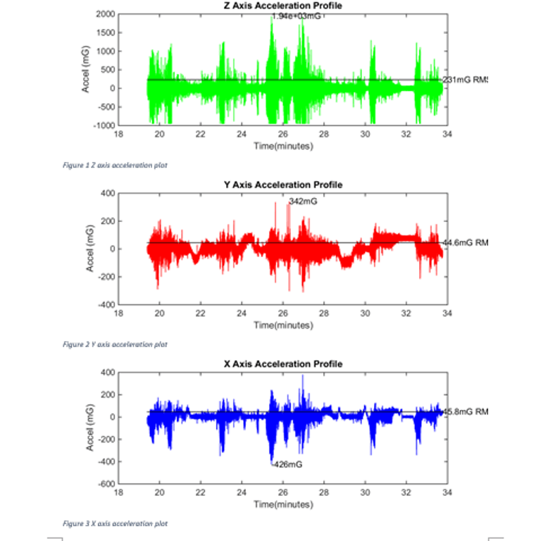

One sensor can do it all
Comparing different positions of track can tell you alot about the wear level
Triple axis vibration analysis with RMS (root mean squared calculation) and peak analysis
Find out the cause of vibration using frequency spectrum analysis
Do comparizons with other positions